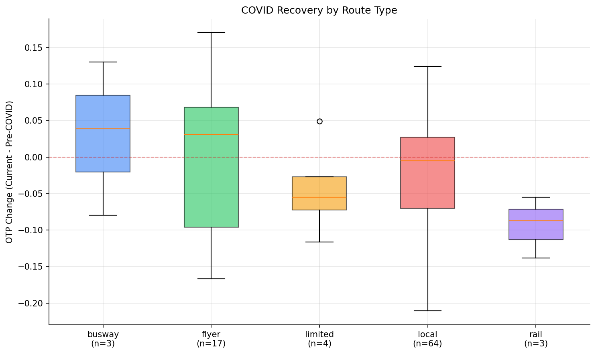
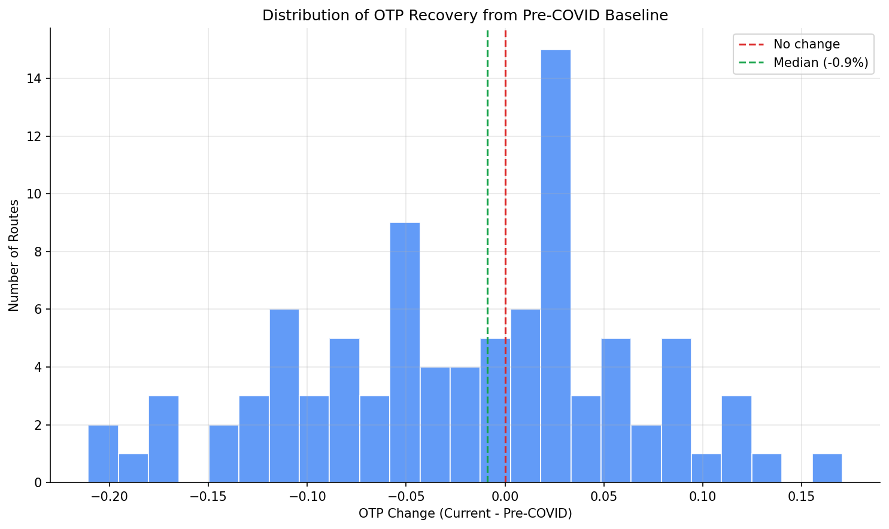
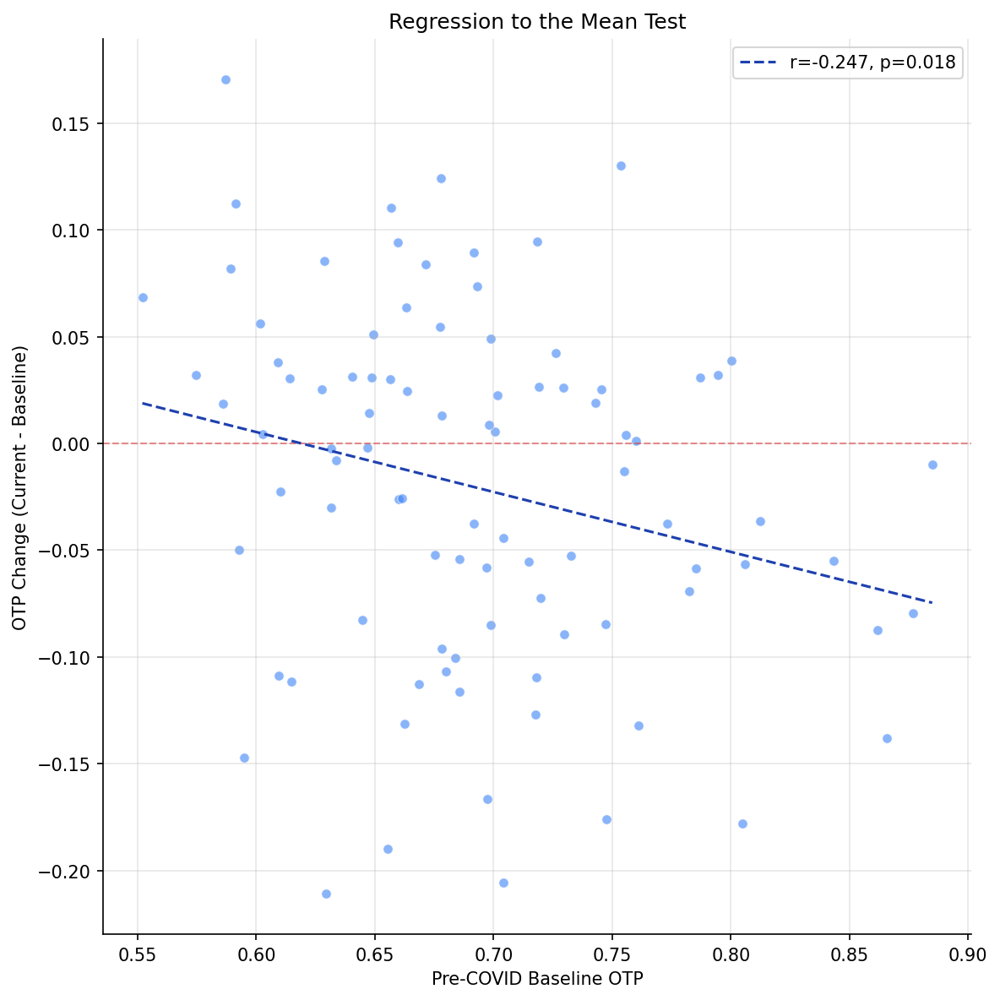

Analysis
14: COVID Recovery Trajectories
Route and Service Drivers
Coverage: 2019-01 to 2025-11 (from otp_monthly).
Built 2026-03-20 19:31 UTC · Commit 1ffb273
Page Navigation
Analysis Navigation
Data Provenance
flowchart LR
14_covid_recovery(["14: COVID Recovery Trajectories"])
t_otp_monthly[("otp_monthly")] --> 14_covid_recovery
01_data_ingestion[["Data Ingestion"]] --> t_otp_monthly
t_route_stops[("route_stops")] --> 14_covid_recovery
01_data_ingestion[["Data Ingestion"]] --> t_route_stops
t_routes[("routes")] --> 14_covid_recovery
01_data_ingestion[["Data Ingestion"]] --> t_routes
d1_14_covid_recovery(("numpy (lib)")) --> 14_covid_recovery
d2_14_covid_recovery(("polars (lib)")) --> 14_covid_recovery
d3_14_covid_recovery(("scipy (lib)")) --> 14_covid_recovery
classDef page fill:#dbeafe,stroke:#1d4ed8,color:#1e3a8a,stroke-width:2px;
classDef table fill:#ecfeff,stroke:#0e7490,color:#164e63;
classDef dep fill:#fff7ed,stroke:#c2410c,color:#7c2d12,stroke-dasharray: 4 2;
classDef file fill:#eef2ff,stroke:#6366f1,color:#3730a3;
classDef api fill:#f0fdf4,stroke:#16a34a,color:#14532d;
classDef pipeline fill:#f5f3ff,stroke:#7c3aed,color:#4c1d95;
class 14_covid_recovery page;
class t_otp_monthly,t_route_stops,t_routes table;
class d1_14_covid_recovery,d2_14_covid_recovery,d3_14_covid_recovery dep;
class 01_data_ingestion pipeline;
Findings
Findings: COVID Recovery Trajectories
Summary
The system-wide OTP decline since COVID is unevenly distributed. Of 92 routes with data in both periods, 43 improved and 49 declined, with a median delta of -0.9 pp and a mean delta of -2.1 pp. However, a significant regression-to-the-mean effect (r = -0.25, p = 0.02) means that much of the apparent divergence between "improved" and "declined" routes is a statistical artifact: routes with extreme baselines naturally regress toward the mean.
Key Numbers
- 92 routes with data in both pre-COVID (2019-01 to 2020-02) and current (2024-12 to 2025-11) periods
- 43 improved, 49 declined
- Median recovery delta: -0.9 pp
- Mean recovery delta: -2.1 pp
- Regression-to-the-mean: r = -0.25 (p = 0.02) -- routes with high baselines tended to decline; routes with low baselines tended to improve
- Kruskal-Wallis test across subtypes: H = 5.5, p = 0.24 -- no significant difference between route types
- Stop count vs recovery (bus): r = -0.11, p = 0.32 -- not significant
Most Improved / Most Declined
Most improved:
| Route | Baseline | Current | Delta |
|---|---|---|---|
| P7 - McKeesport Flyer | 58.7% | 75.8% | +17.1 pp |
| G2 - West Busway | 75.4% | 88.4% | +13.0 pp |
| 21 - Coraopolis | 67.8% | 80.2% | +12.4 pp |
Most declined:
| Route | Baseline | Current | Delta |
|---|---|---|---|
| 71B - Highland Park | 63.0% | 41.9% | -21.1 pp |
| 58 - Greenfield | 70.4% | 49.8% | -20.6 pp |
| 65 - Squirrel Hill | 65.5% | 46.5% | -19.0 pp |
Observations
- The regression-to-the-mean test is significant (r = -0.25, p = 0.02): routes that started with below-average OTP tended to improve, and routes that started above-average tended to decline. This does not mean the recovery differences are entirely artifactual, but it means the extreme cases (P7 improving +17 pp from a 58.7% baseline, or Route 6 declining -17.8 pp from an 80.5% baseline) are partially explained by statistical regression rather than operational changes.
- The Kruskal-Wallis test across subtypes is not significant (p = 0.24), meaning there is no statistically defensible evidence that premium routes recovered better than local routes as a group. The observation that the top improvers are flyers/busway routes may reflect cherry-picking the extremes rather than a systematic pattern.
- That said, the most-declined routes are genuinely concentrated in Pittsburgh's eastern neighborhoods (Highland Park, Greenfield, Squirrel Hill), and these declines are large enough to be concerning regardless of the RTM effect.
Implication
The recovery picture is more nuanced than "premium routes improved, local routes declined." RTM explains a substantial fraction of the divergence. The policy-relevant finding is narrower: specific local bus routes in the eastern corridor have deteriorated badly (15-21 pp below pre-COVID levels), and this decline exceeds what RTM alone would predict.
Caveats
- Regression to the mean is not the only explanation. Operational changes (schedule modifications, staffing shifts) may have genuinely affected some routes more than others.
- The current period is the trailing 12 months of available data (2024-12 to 2025-11), which may not represent a stable equilibrium.
- The pre-COVID baseline (2019-01 to 2020-02) includes months of varying performance; a longer baseline would be more stable.
Review History
- 2026-02-10: RED-TEAM-REPORTS/2026-02-10-analyses-12-18.md — 3 issues (2 significant). RTM test and Kruskal-Wallis added; "premium routes recovered better" claim narrowed.
Output

box plot of recovery delta by mode/subtype.

histogram of recovery deltas.

Scatter plot testing baseline OTP versus recovery delta to assess regression-to-the-mean effects.
No interactive outputs declared.
per-route baseline, current, delta, and characteristics.
Preview CSV
Methods
Methods: COVID Recovery Trajectories
Question
PRT system OTP declined from ~69% pre-COVID to ~62% currently (Analysis 01). But did all routes decline equally, or did some recover while others cratered? What route characteristics predict recovery?
Approach
- Define pre-COVID baseline as average OTP during 2019-01 through 2020-02 (14 months before COVID disruption).
- Define current period as the trailing 12 months of data.
- For each route with data in both periods, compute:
- Exclude routes with fewer than 6 months in either period.
- Characterize recovery by mode, bus subtype, stop count, and geographic span.
- Identify the most-recovered and most-declined routes.
- Test whether mode, stop count, or bus subtype predicts recovery.
Data
| Name | Description | Source |
|---|---|---|
otp_monthly |
Monthly OTP per route | prt.db table |
routes |
Mode classification | prt.db table |
route_stops |
Stop count per route | prt.db table |
Output
output/covid_recovery.csv-- per-route baseline, current, delta, and characteristicsoutput/recovery_distribution.png-- histogram of recovery deltasoutput/recovery_by_mode.png-- box plot of recovery delta by mode/subtype
Sources
| Name | Type | Why It Matters | Owner | Freshness | Caveat |
|---|---|---|---|---|---|
| otp_monthly | table | Primary analytical table used in this page's computations. | Produced by Data Ingestion. | Updated when the producing pipeline step is rerun. | Coverage depends on upstream source availability and ETL assumptions. |
| route_stops | table | Primary analytical table used in this page's computations. | Produced by Data Ingestion. | Updated when the producing pipeline step is rerun. | Coverage depends on upstream source availability and ETL assumptions. |
| routes | table | Primary analytical table used in this page's computations. | Produced by Data Ingestion. | Updated when the producing pipeline step is rerun. | Coverage depends on upstream source availability and ETL assumptions. |
| numpy | dependency | Runtime dependency required for this page's pipeline or analysis code. | Open-source Python ecosystem maintainers. | Version pinned by project environment until dependency updates are applied. | Library updates may change behavior or defaults. |
| polars | dependency | Runtime dependency required for this page's pipeline or analysis code. | Open-source Python ecosystem maintainers. | Version pinned by project environment until dependency updates are applied. | Library updates may change behavior or defaults. |
| scipy | dependency | Runtime dependency required for this page's pipeline or analysis code. | Open-source Python ecosystem maintainers. | Version pinned by project environment until dependency updates are applied. | Library updates may change behavior or defaults. |